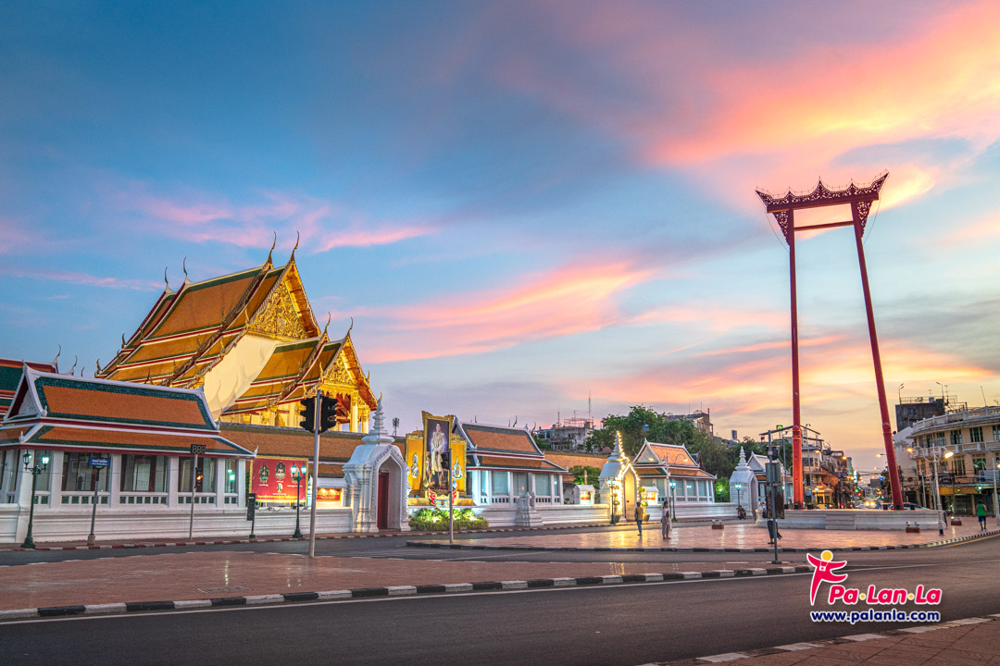
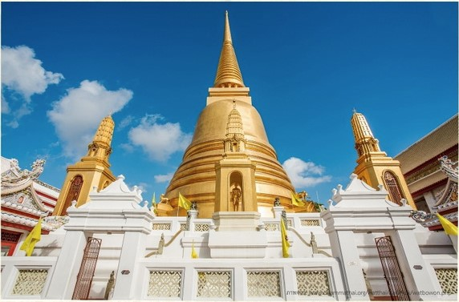
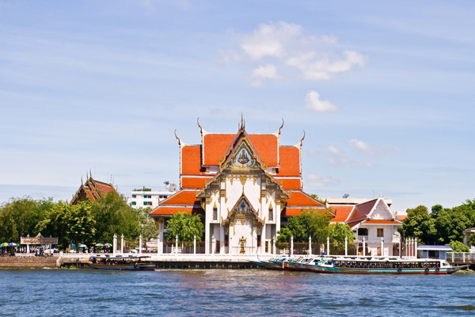

เเนะนำวัดในกรุงเทพ

วัดสุทัศนเทพวรารามราชวรมหาวิหาร วัดสุทัศนเทพวรารามราชวรมหาวิหาร หรือที่เรียกสั้น ๆ ว่า วัดสุทัศน์ พระอารามหลวงชั้นเอก ชนิดราชวรมหาวิหาร เพียงไม่กี่แห่งในกรุงเทพฯ และประเทศไทยว่ากันว่าในทางสถาปัตยกรรม วัดแห่งนี้ได้รับการยกย่องว่าเป็นวัดที่มีการออกแบบได้สัดส่วนงดงามที่สุดในสมัยรัตนโกสินทร์ คนนิยมมากราบไหว้นมัสการพระพุทธรูปสำคัญในวัด นอกจากนี้ยังมีพระบรมราชานุสาวรีย์รัชกาลที่ 8 ตั้งอยู่ด้วย เพราะถือว่าเป็นวัดประจำรัชกาล วันนี้เราเลยจะพาเพื่อน ๆ ไปสำรวจสถานที่ท่องเที่ยวสำคัญแห่งนี้กันให้มากขึ้น |

วัดระฆังโฆษิตาราม วรมหาวิหาร การขอพรหน้าที่การงาน ให้ทำงานราบรื่น สุดปัง หนึ่งในพรที่มนุษย์ทำงาน เงินเดือนเป็นยอดปรารถนา วัดระฆังโฆสิตารามวรมหาวิหารกรุงเทพมหานคร หนึ่งในวัดที่มีชื่อเสียงโด่งดังเรื่องของพรการงานให้สมหวัง มาทำบุญขอพรแล้วชื่อเสียงจะโด่งดังเหมือนระฆังที่เป็นชื่อของวัดอีกด้วยวัดวัดระฆังโฆสิตารามวรมหาวิหาร วัดที่มีชื่อเสียงเรื่องการขอพรด้านหน้าที่การงานแล้วสำเร็จ ซึ่งวัดวัดระฆังโฆสิตารามวรมหาวิหาร ตั้งอยู่ในแขวงศิริราช เขตบางกอกน้อย กรุงเทพมหานคร ติดแม่น้ำเจ้าพระยา ฝั่งธนบุรี อ่านเพิ่ม |

วัดบวรนิเวศวิหารราชวรวิหาร วัดบวรนิเวศราชวรวิหาร พระอารามหลวงแห่งพระบรมราชจักรีวงศ์ อันสะท้อนถึงความผูกพันของสถาบันพระมหากษัตริย์และพระพุทธศาสนามาอย่างต่อเนื่องยาวนานวัดบวรนิเวศวิหาร เป็นพระอารามหลวงชั้นเอก ชนิดราชวรวิหาร ฝ่ายธรรมยุต ตั้งอยู่ริมถนนบวรนิเวศและถนนพระสุเมรุ เป็นหนึ่งในวัดสำคัญของกรุงเทพฯ ที่ขึ้นชื่อทั้งในเรื่องความงดงามทางสถาปัตยกรรมและประวัติศาสตร์ เมื่อครั้งในอดีตพระบาทสมเด็จพระจอมเกล้าเจ้าอยู่หัว รัชกาลที่ 4 ทรงพระผนวช และได้เสด็จมาประทับที่วัดนี้เป็นครั้งแรกก่อนเสด็จขึ้นครองราชย์ และพระมหากษัตริย์อีกหลายพระองค์ นับได้ว่าเป็นวัดสำคัญประจำราชวงศ์จักรีนับตั้งแต่อดีตจวบจนถึงปัจจุบัน |